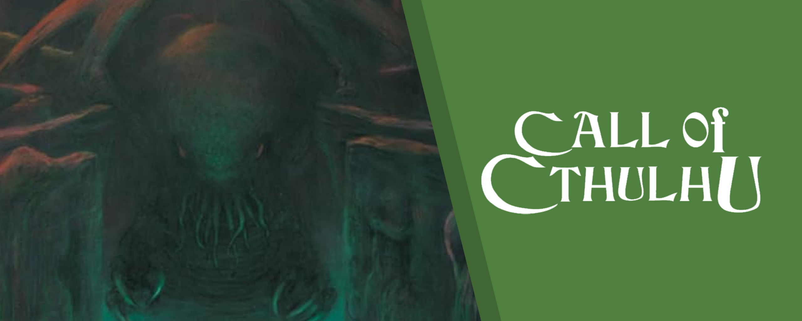
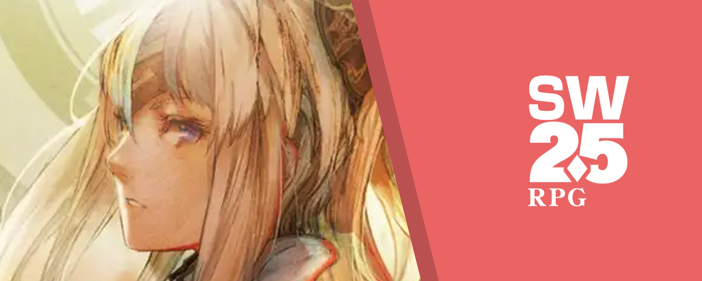
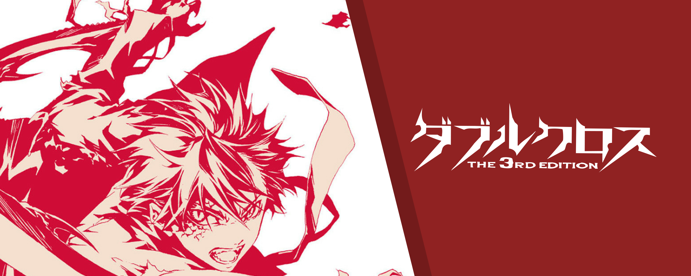
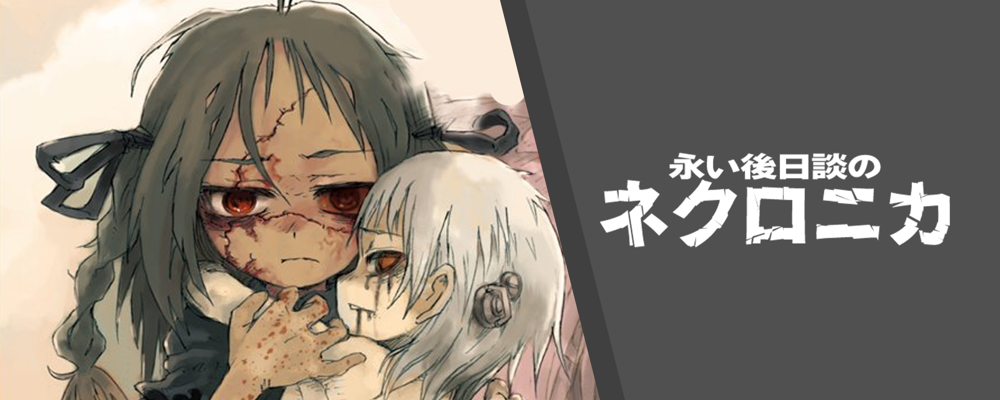
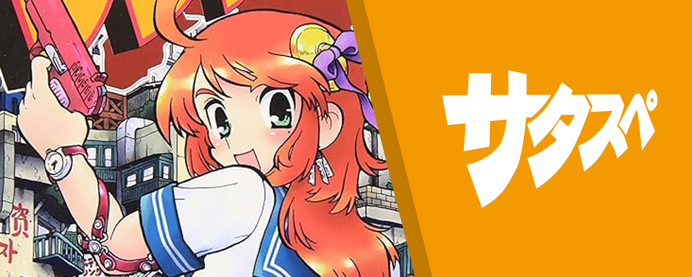
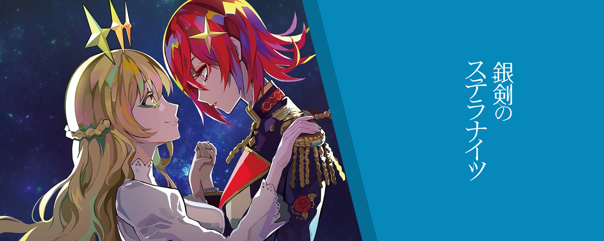
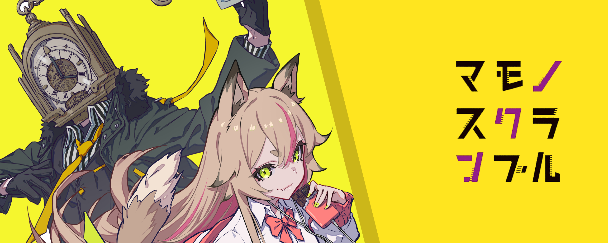

TRPGを始めたばかりの皆さん、こんにちは！「卓スタダ」は、あなたのTRPGライフをより楽しく、スムーズにするためのツールや情報がたくさん詰まったサイトです。
このページでは、「何から見ればいいの？」「このツールはどうやって使うの？」といった疑問に答え、サイトの歩き方をナビゲートします。
TRPGってなに？
TRPG（テーブルトーク・ロールプレイングゲーム）は、ゲームマスター（GM）とプレイヤーが対話しながら物語を進めるゲームです。プレイヤーは自分だけのキャラクターになりきり、GMが用意した世界で冒険します。サイコロを振って行動の成否を判定するのが特徴です。
ダイスの振り方
TRPGでは、よく「2d6」や「1d100」といった表記で、使用するサイコロの種類と数を表します。これは「[サイコロの数]D[面数]」という形式で、例えば「2d6」なら「6面体のサイコロを2個振る」という意味になります。オンラインセッションツールには、この形式で入力すると自動でサイコロを振ってくれる機能があります。
何が必要？
- ルールブック:
遊びたいゲームのルールが書かれた本です。今回はルールブックなしでできるようにエンJが頑張りますが、気に入ったら買ってやってください。（クトゥルフ神話RPGは6600円か月額600円、SW2.5やDX3rdは1冊980円から始められる。基本が2冊あったり3冊あったりするけど）ちなみにエンJは出版社から一銭ももらっておりません。
- 仲間: 一緒に遊ぶ友達（GMとプレイヤー）が必要です。SNSやオンラインのコミュニティで探すこともできます。手に入れた。ね？
- ツール: オンラインで遊ぶなら、ココフォリアのようなセッションツールや、Discordなどの通話アプリがあると便利です。手に入れた。ね？
3分でわかる"クトゥルフ神話TRPG"
クトゥルフとはあるが、TRPG全般みたいなこと書いてあるぞ
卓スタダ終わっちまったので、始めるきっかけがなかなかない！って人を助けるためのアンケートです！
恒常イベントなんでゆるくいこう
卓スタダ公式サイト
卓スタダ-mini 開催します
- こちら時期を指定しない恒常イベントとなります
- 基本は夜にやります
- 「半テキ」と呼ばれるスタイルでやります。このサーバーで一番やられる方法やね。ボイスチャットで雑談しつつ、ロールプレイングはテキストで……って感じ。一番やりやすいかも。
- 経験者でも「スタダの付き添い枠」などでの参加をOKとします。サポーターって感じ。未踏の地に行くんだったら知り合いと行きたい！とかあるじゃん？
- 組分けを優先するので知らない人相手になることもあるかもね（もしサポーターで知り合い呼びたい！とかあるならエンJが頑張って調整します）
- 一応改めて声掛けする事があるかもしれないので、参加しない人でも意志としてフォームに書いておいてください（要望書く欄もあるからね）
- わからんことあったら #🎲卓雑談 やDMで おれにきいてください（自分どの部門参加できる？とか）
卓スタダとして取り扱っているシステム
クトゥルフ神話TRPG

探索者となって神話的怪異に立ち向かうホラーTRPG。正気度の喪失や死の恐怖に晒されながら、謎と真相を追う恐怖が魅力。SAN値チェックといえばこれ。
ソード・ワールド2.5

多彩な種族と職業を組み合わせ、剣と魔法の世界で冒険する王道ファンタジーTRPG。（銃もある！）ダイス2つで結構やりやすい。だいぶお気に入り。
ダブルクロスThe3rdEdition

異能力を得た存在「オーヴァード」となり日常と非日常の間で葛藤する現代異能モノTRPG。ゲーム側でNPCとか組織が結構決まってる。コンボを組み合わせた戦略性もあるぞ！
永き後日談のネクロニカ

世界が滅んだ後、アンデッドの少女「人形」となり改造、変異、武装して記憶を追い求めるダークホラーTRPG。対話して自我を保ち、記憶を探そう。表紙グロいけど、戦闘と世界観がステキ。
卓スタダとしてはやっていないが、ここで開かれているシステム
サタスペ

治安が終わった「大阪」を舞台に、アウトロー「亜侠」となって金のために様々な依頼をこなすアジアンパンクTRPG。恋愛あり、チェイスあり、トンチキ珍道中あり、犯罪ありのGTAばりの治安が印象的。赤ちゃんが突如できる。
銀剣のステラナイツ

巨大な積層都市で、運命のパートナーと共に異世界からの侵略者に立ち向かう物語。2キャラ作ることで、2つの味のペアを楽しむことができる。アツいうちよそがしたいならコレ。でも戦闘もけっこう面白い。
マモノスクランブル

現代の東京を舞台に、マモノ（人外）となって仲間と共にトラブルを解決するTRPG。キャラシが初作成でも20分でできるくらい簡単で、すごいやりやすい。《爪》で音を立てます。木を斬ります。と言ったように、能力を応用していこう。
キャラクターシートって？
キャラクターシート（キャラシ）は、あなたの分身となるキャラクターの名前、能力、設定などを記録する用紙です。ルールブックの指示に従って、サイコロを振ったり、ポイントを割り振ったりして作成します。
便利なツールを活用しよう
当鯖においては、以下のキャラシツールがメインで用いられております。
クトゥルフだけやる方はいあきゃら、それ以外の方はキャラクターシート倉庫から入ってみると良いかも。
キャラクターシート倉庫
いろいろなシステムと連携してるから1アカウントでなんとかなるやつ（CoC,SW2.5,DX3,ネクロニカなど）
ただしSW2.5の最新情報が乗っていなかったりする。
いあきゃら
クトゥルフしか対応していないけど秘匿情報とか立ち絵とかのっけられるやつ
ゆとシート
立ち絵を載せられるが、SWやDXではデフォルト値が保管されきっていない。（SW2.5,DX3,マモブルなど）
ココフォリアって？
ココフォリアは、多くのオンラインセッションで使われているブラウザベースのツールです。キャラクターのコマを配置したり、ダイスを振ったり、チャットで会話したりできます。
まずは触ってみよう
公式のチュートリアルが非常に分かりやすいので、まずはこちらに目を通すのがおすすめです。
５分でわかる！PL向け卓準備
ココフォリアの基本的な使い方を、プレイヤー（PL）向けに解説した公式チュートリアルです。
チュートリアルでは「マイキャラクター一覧から追加」とありますが、卓スタダではキャラクターシート作成サイトから「チャットパレット」をコピーして使うことが多いです。そのため、ココフォリア上でのキャラクター作成は、主に立ち絵を置くために使う、と考えておくとスムーズです。
百聞は一見に如かず。まずは練習用のルームで自由に操作を試してみましょう。
楽屋ココフォリア
ダイスを振ったり、画像をアップロードしたり、自由に試せる練習部屋です。
こちらが、キャラ出力をすることができるツールです。キャラシのURLをコピーして、ココフォリア上で右クリック（スマホだと長押し）して貼り付けをして、そのキャラの名前のコマが出てきたらお前の勝ちです。
キャラシコピペツール (CoC, SW等)
各種キャラクターシートをココフォリア用に整形します。
キャラシコピペツール (DX3rd, サタスペ等)
Google Apps Script製のキャラクターシート整形ツール。
心構え
TRPGは、ゲームマスター（GM）とプレイヤーみんなで協力して、一つの物語を作り上げていく、とっても素敵なゲームなんだ。
だから、セッションを楽しくするためには、ちょっとした心構えが大切だよ。まずは、GMさんや一緒に遊ぶ他のプレイヤーさんへの「リスペクト」の気持ちを忘れずにね。みんなで気持ちよく遊ぶために、積極的にコミュニケーションを取ってみよう！
あと、自分のキャラクターになりきって「ロールプレイング（RP）」を楽しむのもTRPGの醍醐味だよ。キャラクターがどんな気持ちで、どんな行動をするのか、想像力を膨らませて表現してみよう。もちろん、最初は難しく感じるかもしれないけど、少しずつ慣れていけば大丈夫！
最後に、セッションは「みんなで楽しむ」ことが一番大切。勝ち負けにこだわりすぎず、物語の展開やキャラクターの成長、そして仲間との交流を存分に楽しんでほしいな。きっと、忘れられない思い出がたくさんできるはずだよ！
最初に覚える大切なルール
TRPGをマジで楽しむために、基本的なルールをいい感じにまとめたんで、見てね～
全員が守ること
これ、みんなで守ってほしいことなんだけど、TRPGってプレイヤー同士で競い合うものじゃないし、プレイヤーとGMが戦うものでもないんすよ。だから、積極的に「みんなで楽しもう！」っていう気持ちを大切にね～ GMは敵じゃない リピートアフターミー
プレイヤーが守ること
プレイヤーのみんなには、GMの指示に従ってね。もちろん、GMだって人間なんで間違えることもあるので、そういうときは、遠慮なく「あれ？これってこうじゃね？」って指摘してくれても全然OKね。でもね、最終的にはGMの決定に従ってくれると
GMが守ること
GMはね、常に公平さを心がけないといけない。GMは物語の進行役として、最終的な裁定やルールの決定をする大事な役割を担ってるからね。だから、参加者みんなが楽しめるように、ルールを適切に運用して、公正な判断をしよう、ということやね。
GMの権限
ゲーム中に「このルールってどうするの？」「これってどう判定するの？」ってなったときは、GMが最終的に決定します。もしルールブックに書いてないことや、ちょっと判断に迷うことがあっても、GMが「こうしよう！」って決めてくれたら、それに従ってみてね。そのときも、GMはみんなが盛り上がるように考えて判断するんで…！「ゴールデンルール」とも言われているね
結果の棄却
もしね、GMが「まだ振らないでね」って言うてるのに、うっかりサイコロを振っちゃった！なんてことがあったら、GMはその結果を「なし！」にしたり、「もう一回振ってね」ってやったりするかもなんで、一応ね。
セッションの進行
GMは、セッションをスムーズに進めるための「進行役」やから、プレイヤーの行動でシナリオが思わぬ方向に進んじゃったり、ちょっと脱線しちゃったり、みんなが「どうしよう…」って手詰まりになっちゃったりしても、GMが独自の判断でセッションを進めたり、状況を変えたり、ゲーム内の時間を進めたりしても構いません。
ルールを間違えたときの処理
もしルールの間違いに気付いた場合、以後間違えないよう注意しましょう。ですが、それ以前にさかのぼって間違いを正す必要はありません。時間を巻き戻すのは混乱のもととなり、ゲームを停滞させる原因になるからです。どのような場合であれ、最終的な決定はGMが行います。なるべくプレイヤーに不利益が発生しないよう、公正に裁決しましょう。そしてみんなが楽しくスムーズに遊ぶためにも、なるべく全員がルールを正しく把握するように努め、ルールブックをよく読んでおいてください。
もしもアタシがやれてなかったら、しばいてください
単発セッション
1回（3～6時間程度）で完結するセッションです。物語の起承転結が1日で体験できるため、初心者の方や、気軽に遊びたい方におすすめです。
キャンペーンセッション
同じキャラクターを使って、複数回にわたって連続した物語をプレイするセッションです。キャラクターの成長や、壮大な物語の展開を楽しめます。長期間にわたるため、メンバーとのスケジュール調整が重要になります。
シナリオを探そう
卓スタダでは、シナリオ作りのヒントやテンプレートも公開しています。自分でシナリオを作ってみたいGM志望の方も、遊ぶシナリオを探している方も、ぜひ覗いてみてください。
クトゥルフ神話TRPG シナリオスタダ
シナリオ作りのQ&Aや、便利なテンプレートをまとめています。